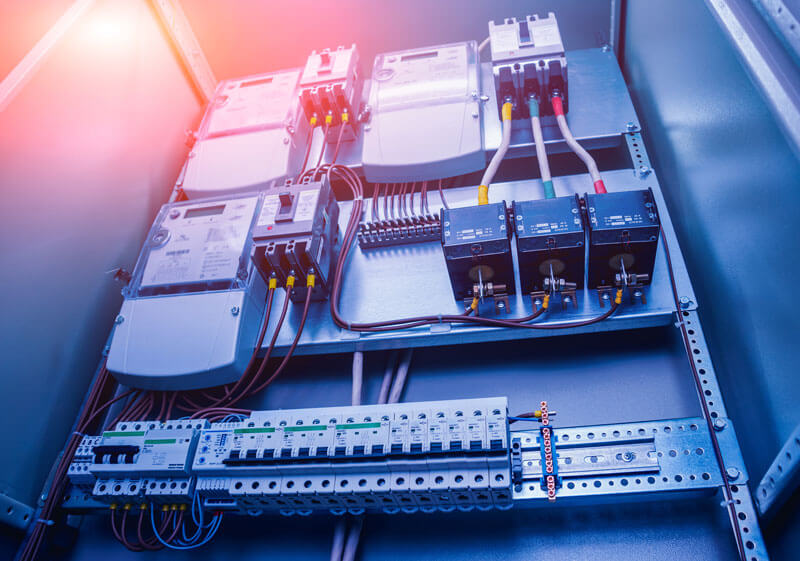
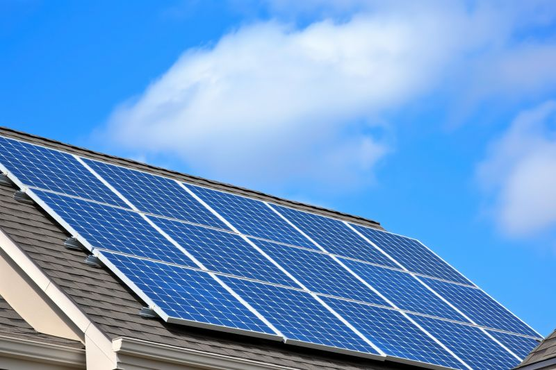

Find Out More
OUR SERVICES

LV Electrical Installations
- Residential and commercial electrical installations.
- Electrical wiring, conduit and cable reticulation.
- Lighting, switching and socket-outlet installations.
- Distribution board installation and upgrades.
- Cable pulling, glanding, termination and connections.
- Earthing and bonding installations.
Electrical Maintenance and Repairs
- Planned and preventative electrical maintenance.
- Corrective maintenance and electrical repairs.
- Electrical fault finding and troubleshooting.
- Inspection and maintenance of distribution boards and circuits.
- Repair and replacement of damaged cables, accessories and components.
- Support with electrical faults and breakdowns.
Distribution Boards and Control Panels
- Supply, installation, replacement and upgrading of low-voltage distribution boards.
- Main and sub-distribution board work.
- Circuit breaker and protective-device installation or replacement.
- Control panel wiring, modifications and refurbishment.
- Motor control and starter panel services within the agreed LV scope.
- Circuit identification, labelling and panel documentation.
Electrical Testing and Commissioning
- Electrical installation inspection and verification.
- Insulation resistance testing.
- Continuity and earth continuity testing.
- Polarity and phase sequence checks.
- Earth leakage and protective-device checks.
- Functional testing and commissioning of completed LV installations.
Testing and certification are limited to applicable competence, registration and authorisation. Any required electrical Certificate of Compliance (CoC) is issued only by an appropriately registered person.

Industrial Electrical Services
- Low-voltage electrical connections for machinery and equipment.
- Electrical motor connections and related control circuits.
- Pump and conveyor electrical connections and control support.
- Industrial lighting and power installations.
- Industrial electrical fault finding and maintenance.
- LV electrical modifications and upgrades.
Solar and Backup Power
- Inverter and battery backup system installations.
- UPS installation, maintenance and support.
- Solar PV electrical installation services.
- Changeover systems and automatic transfer switch (ATS) installations.
- Backup power system inspection, testing and maintenance.
- Integration of suitable low-voltage power and protection equipment.
Solar PV and backup-power work is subject to system design, equipment suitability, applicable standards and required professional or statutory approvals.